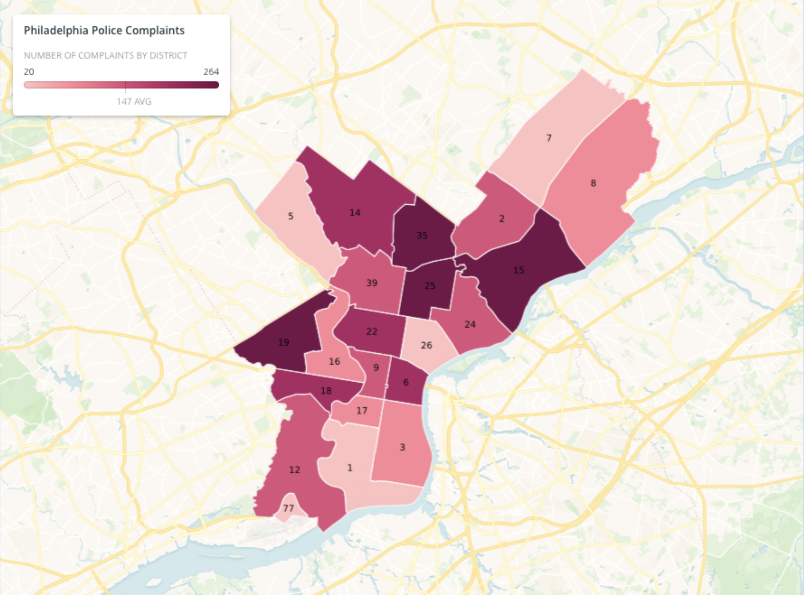

We hoped to see how the outcomes and prevalence of complaints against police officers differed based on the race, gender, and geographic location of the complainant. We also looked at the differences in outcome based on the type of complaint. Filing a police report is not easy. In Philadelphia, you need to go to a police district to file a report you need to fill out a form and mail, email or physically drop it off. We want to make police harassment and abuses of power more visible in the City of Brotherly Love.

-Of over 7000 individual officer complaints in the database, only 1354 had Sustained Findings from investigations.
-According to the complainant, on 2-13-17 at 7:45pm, they were "assaulted by an off-duty officer and an 8th District officer and supervisor would not take a report of the incident."
-180 reports against individual officers didn't even get any investigations at all.
-The summary of report from a child aged 12 says, "According to the complainant, on 9-11-15 at 1:42pm, their juvenile family member was physically abused by an officer assigned to the 15th District."
-95% of police violence is not reported formally (Raheem).
-"According to the complainant, on 2-20-20 at 6:00 PM, they were sexually harassed by an officer assigned to the Airport Unit."
-65% of total complaints came from Black people, but in the 2019 American Community Survey Philadelphia was only 43.8% Black.
-"According to the complainant, on 4-24-20, they were improperly stopped and ticketed by an officer assigned to the 19th District.
The complainant also reported several officers' personally owned cars parked in the 19th District had dark tinted windows."
-892 officers had a Guilty Finding or were required to go to Training/Counseling.
Less than 15% of officers were held accountable for civilian complaints.